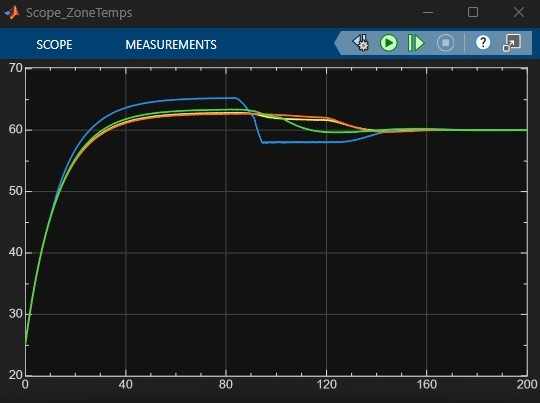
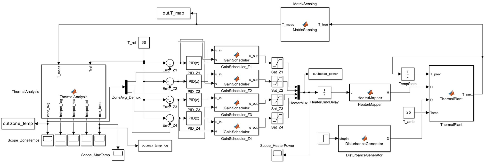
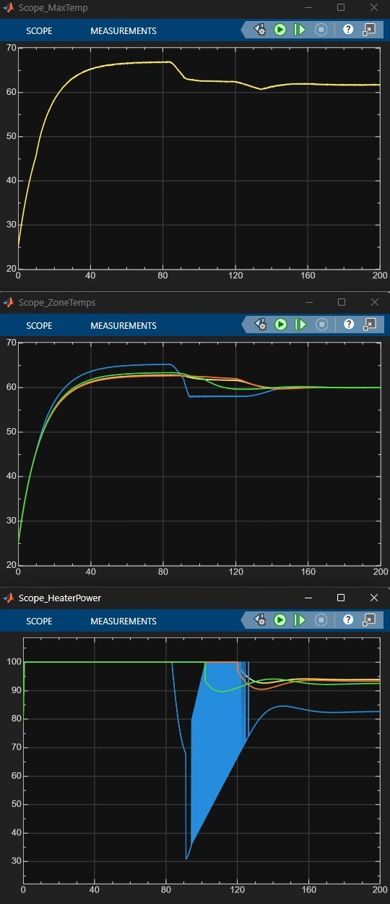

Closed-Loop Heating Table
A smart heating surface modelled in MATLAB/Simulink. The table is split into a 6 × 8 grid of 48 temperature points and kept at its setpoint by four zones, each with its own PID controller and adaptive gain scheduling. Matrix-addressed sensing cuts the sensor wiring from 48 lines to 14, about 70% less, while still seeing every point on the surface. The model also detects hotspots and recovers on its own from local disturbances.

Four subsystems, one closed loop
Every 0.1 s the thermal plant updates the temperature field, the sensing layer measures it, the analysis block extracts zone temperatures and hotspots, and the controllers set the heaters.

A surface, not a single temperature
The table is modelled as a discrete 6 × 8 grid. Each of the 48 nodes heats from its local heater, shares heat with its neighbours, loses heat to the 25 °C ambient air and can be hit by an external disturbance. This captures what a single-temperature model misses: uneven heating, local cold spots and disturbances spreading across the surface.
48 points, 14 wires
Wiring every one of the 48 temperature points separately would need 48 lines. Instead, the sensing layer is matrix-addressed: each point is read where one of 6 row lines crosses one of 8 column lines.
That cuts the interconnections from 48 to 14, about 70% less wiring, while the controller still sees the full temperature map. The same idea scales to large smart surfaces where wiring would otherwise grow with every added sensor.

Four zones, each with its own PID
The surface is split into four zones. Each zone averages its temperatures, compares the result with the 60 °C setpoint and runs its own PID controller. A gain scheduler pushes harder when the error is large to heat up quickly, then backs off near the setpoint to limit overshoot. Saturation blocks keep each heater command within its limits, and a heater-mapping block spreads each zone's command across its part of the 6 × 8 grid.
In the simulation all four zones heat from 25 °C to the setpoint. When a disturbance hits one zone at around 85 s, only that zone's heater reacts, and every zone settles back at 60 °C. Hotspot flags and the surface maximum temperature are monitored throughout.
Play with the controller
A simplified version of the same idea running in your browser. Click any cell to cool that area and watch its zone recover.
/stack